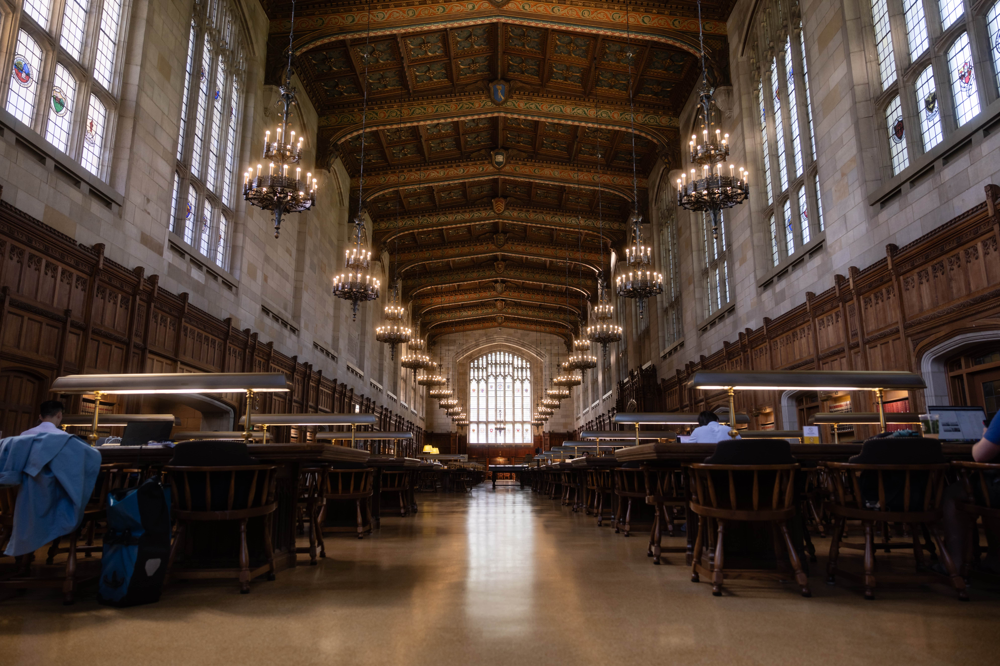

Overview
Maintaining a healthy school/life balance can be difficult, especially as a graduate student here at the University of Michigan. On this page, we've included tips and resources to achieve a better school/life balance.
Study Spaces
The first part of a healthy school/life balance is, of course, school! By utilizing the many study spaces on campus to get your graduate work done, you can more easily separate your academic life from your personal life, making it easier to achieve a healthy school/life balance. Some of our favorite study spots for graduate students include:
The Hatcher Graduate Library
The study carrels on the third, fourth, and fifth floors offer private, quiet studying opportunities. Additionally, the reading room on the second floor has beautiful architecture and serves as another quiet study space.

The Law Library
Only the reading room is accessible to non-Law students, but this is another study spot with beautiful architecture and space to spread out. But you can't make a peep!
The Rackham Graduate School
The Rackham Graduate School has some lesser known study spots, including a reading room and two comfortable lounges, which are also beautiful and great for quiet study time.
Graduate Student Organizations
Student organizations can be a great way to meet people with similar interests! By getting involved with some student organizations on campus, you can attend events and do work related to your personal interests, and you can make new friends to spend time with in your personal time.
Some graduate student organizations at the University of Michigan School of Information include:
- Doctoral Student Organization
- Health Informatics Student Organnization
- Master of Applied Data Science Association
- School of Information MSI Association
Visit Maize Pages to check out more graduate and professional student organizations!
Recreational Sports
Recreational Sports at the University of Michigan offers many ways to stay active while completing your graduate education! Staying physically active helps to keep your body and mind healthy and is an important aspect of a balanced lifestyle.
Recreational Sports offers:
- 3 Traditional Gyms on Campus
- Club Sports
- Intramural Sports
- Group Fitness
- Personal Training
- Outdoor Adventure
- and more!
Fun Things to Do in Ann Arbor
A key component of a healthy school/life balance is making time for fun! In this section, we've included some great ways and places to have fun in Ann Arbor.
Activities
- Catch a movie at the Michigan or State Theater
- Try axe throwing at Axe Ventura
- See some great bands at The Blind Pig, The Ark, or the Blue Llama Jazz Club
- Grab a scoop of ice cream at Blank Slate or Washtenaw Dairy
- Check out Michigan sports at the Big House, the Crisler Center, or Yost Ice Arena
- Head to Kerrytown for the Ann Arbor Farmer's Market on Saturday mornings